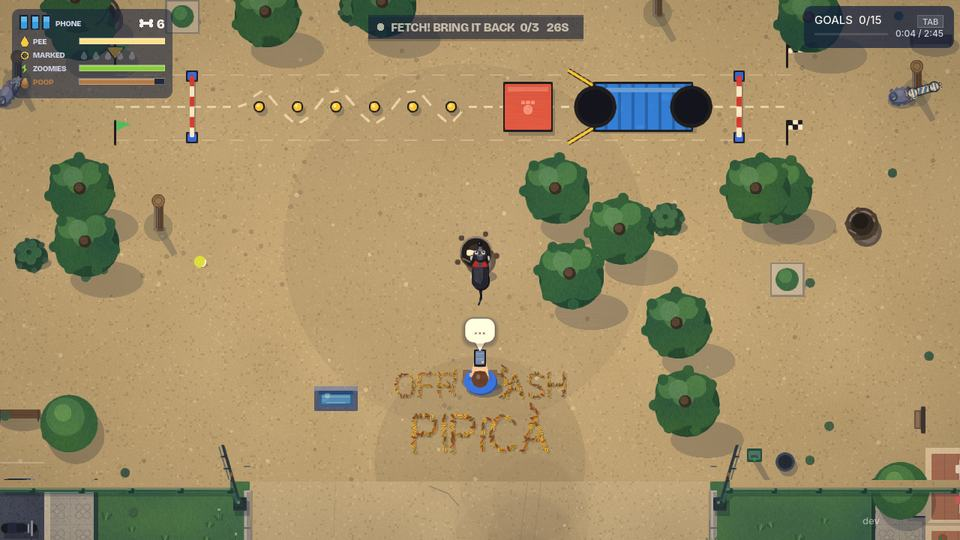

Chapter 1Clear, day
El Barri
The little park at the end of your street
A modest neighborhood street ending in a square and a small fenced dog run. Between stone benches, gravel flowerbeds, an outdoor ping-pong table and passing dogs on the same loop, it is the everyday circuit every Barcelona dog knows nose-first.
- Off-leash stop
- PIPICÀ (Fenced dog yard)
- Beat the clock
- Under 2:45
Screenshots



Goals (15)
- Mark 5 spots
- Have 4 good long sniffs
- Get the phone home without a scratch
- Get yourself home without a bump
- Get your business bagged
- Bring the ball back 3 times
- Bring Tofu the cat home
- Say hello to 3 dogs
- Have a good long drink
- Scarf down 2 dropped snacks
- Land an x3 trick combo
- Get the ball back from under the ping-pong table
- Spell LEASH
- Find the hidden pernil
- Beat the clock (under 2:45)